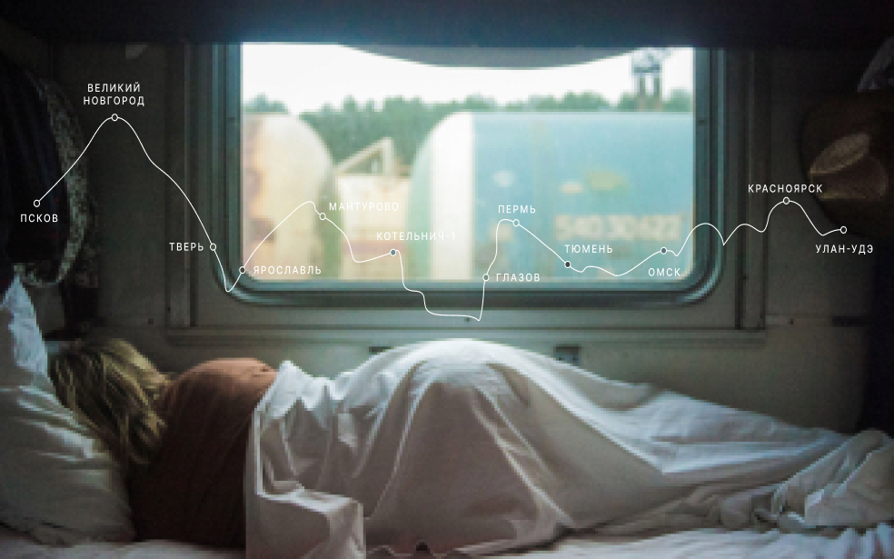

Настоящая страна не в выпусках новостей, а здесь.
ваша полка — верхняя
По опросам ВЦИОМ, 95% россиян мечтают куда-нибудь поехать, но только 36% планируют провести отпуск в родной стране. Мол, чего мы тут, дома, не видели? На самом деле, Россия — это целая вселенная с ласковым морем юга, густыми лесами Саян и суровыми льдами плато Путорана. А ещё увидеть все эти красоты можно без миллионов на счету, загранпаспорта и многочасовых перелетов. Как, например, Вера Башмакова — смелая молодая мама, которая взяла в охапку троих детей, усадила их в свою «Ладу» и проехала 20 тысяч километров по родной стране. Мы выбрали и описали некоторые интересные места, достойные вашего отпуска.
Здесь, посреди лесов и песчаных дюн, вы сможете увидеть два водных горизонта —
спокойного Куршского залива с одной стороны и подёрнутого рябью волн Балтийского моря с другой.
Уникальная природная зона
на краю
российского анклава.
На этом Калининградская область не заканчивается.
Для путешественника
и
исследователя там же
по соседству — самая
западная
точка России, Балтийская коса, —
и немецкое наследие
россыпи небольших приморских городов. Атмосфера здешних мест исключает суету, окуная
в спокойствие
природы и запах стального, прохладного моря.
Почти весь полуостров находится за Полярным кругом. Саамская тундра, от которой
на юг — тайга,
а на север — Ледовитый океан,
прикидывающийся Баренцевым
морем.
Возможно, вы смотрели Звягинцева и даже слышали историю арктического фестиваля в Териберке. Возможно, слово «Хибины» не осталось под снегом школьных воспоминаний об уроках географии. Возможно, вы не интересовались пронизывающей земную кору сверхглубокой скважиной, а от апатитов вас давно накрывает апатия. Но ваша мечта увидеть северное сияние начинает сбываться с билетом в Мурманск.
Алтай — одно из красивейших мест в России.
В первую очередь из-за гор: если ехать вдоль хребта, вы увидите склоны, усыпанные соснами, горные реки и
озёра.
А если вы откроете
в автомобиле окна, сможете познакомиться с невидимым чудом здешних мест — горным воздухом.
Климат на Алтае умеренный, поэтому ехать сюда лучше всего летом. Так вы увидите
всё разнообразие местной флоры и фауны. По лесам Алтая бродят лоси, над хребтами летают орлы,
а на равнинах пасутся косули.
И знаменитые
манулы — тоже обитатели Алтайского края.
Всем известен Байкал как крупнейшее озеро
в мире. Многие также знают, что это самый большой источник пресной воды
и одно из красивейших мест
в России.
Конечно, это всё так. Но Байкал ещё идеальное место
для соревнований по скийорингу. Это такой вид спорта, когда лыжник привязывает себя
к мотоциклу, и тандем старается развить
как можно бóльшую скорость на льду. В марте 2019 года на фестивале «Байкальская миля» был поставлен
мировой рекорд — 197.011 км/ч.
Сибирь заканчивается не на Урале, а в Карелии: образующая тайгу сибирская
лиственница не растёт западнее Водлозера. Зато здесь она вымахивает на 30 метров — леса карельских
национальных парков из-за непроходимых болот никогда не знали топора. Некоторым соснам уже больше
чем полтысячелетия. Прикоснитесь к живому
существу, видевшему солнце раньше, чем увидал его Иван Грозный. В
девственном лесу на сотню километров не встретишь тропы. А на редких тропинках деревья в паре метров от
земли помечены медвежьими когтями. Чтобы все знали, кто тут хозяин.
По мотивам учебной темы
о Транссибе и iframes —
путешествие
от столицы до Байкала на электричках.